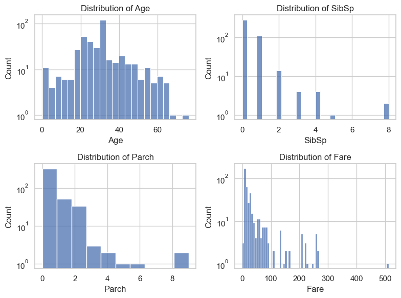
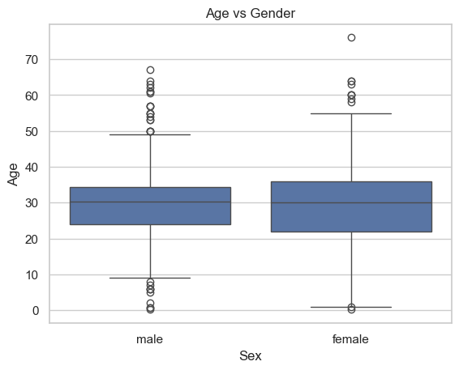

Objective: The goal of this practical lab is to equip you all with the skills to effectively visualize data using various tools and techniques. You will learn how to interpret and represent data visually to communicate insights, trends, and patterns clearly and compellingly.
The Titanic dataset contains information on the passengers aboard the RMS Titanic, which sank in \(1912\). It includes details like age, gender, class, and survival status.
I bet you have heard about or watched Tiannic movie at least once. How about we take a look at the real dataset of Titanic available in Kaggle. For more information about the dataset and the columns, read Titanic dataset. Let’s import it into our Jupyter Notebook by running the following code.
print(f"The number of quantitative variables:{data.select_dtypes(include='number').shape[1]}")print(f"The number of qualitative variables:{data.select_dtypes(exclude='number').shape[1]}")
The number of quantitative variables:4
The number of qualitative variables:8
B. Are there any missing values? If so, you should analyze and handle them properly.
import numpy as npdata.isna().sum()
PassengerId 0
Survived 0
Pclass 0
Name 0
Sex 0
Age 86
SibSp 0
Parch 0
Ticket 0
Fare 1
Cabin 327
Embarked 0
dtype: int64
import seaborn as snsimport matplotlib.pyplot as pltsns.set(style="whitegrid")quan_vars = data.select_dtypes(include='number').columnsfig, axs = plt.subplots(2,len(quan_vars)-1, figsize=(10,6))i =0for var in quan_vars:if var !='Age': sns.kdeplot(data, x=var, ax=axs[0,i]) axs[0,i].set_title(f"{var} before removing NA") sns.kdeplot(data.loc[~data['Age'].isna()], x=var, ax=axs[1,i]) axs[1,i].set_title(f"{var} after removing NA") i +=1plt.tight_layout()plt.show()
qual_vars = data.select_dtypes(exclude='number').columnsfig, axs = plt.subplots(2,len(qual_vars)-4,figsize=(10,5))i =0for var in qual_vars:if var notin ['PassengerId', 'Name', 'Ticket', 'Cabin']: sns.countplot(data, x=var, stat="proportion", ax=axs[0,i]) axs[0,i].set_title(f"{var} before removing NA") axs[0,i].bar_label(axs[0,i].containers[0], fmt='%.3f') sns.countplot(data.loc[~data['Age'].isna()], x=var, stat="proportion", ax=axs[1,i]) axs[1,i].set_title(f"{var} after removing NA") axs[1,i].bar_label(axs[1,i].containers[0], fmt='%.3f') i +=1plt.tight_layout()plt.show()
df = sns.load_dataset('titanic')
print(df.groupby(['sex', 'survived']).size())
sex survived
female 0 81
1 233
male 0 468
1 109
dtype: int64
Word cloud
from wordcloud import WordCloudtokens =' '.join(data.Name)
As the missing values does not impact Survived and other variable too much, we can drop them or simply impute them using the average of the non-missing ones. For Cabin, we simply remove it from our analysis as it contains too many missing values.
PassengerId 0
Survived 0
Pclass 0
Name 0
Sex 0
Age 0
SibSp 0
Parch 0
Ticket 0
Fare 0
Embarked 0
dtype: int64
C. Visualize the distribution of each interesting column. At this stage of the analysis, you should try to see the overall information of the columns of the dataset:
What’s the majority class of the passengers?
How old were they during the incidence?
Where did most of them embark?
fig, axs = plt.subplots(2,2,figsize=(8,6))for i, var inenumerate(data.select_dtypes(include="number").columns): sns.histplot(data, x=var, ax=axs[i//2, i %2]) axs[i//2, i %2].set_title(f'Distribution of {var}') axs[i//2, i %2].set_yscale('log')plt.tight_layout()plt.show()

There were different types of passengers on Titanic including babies and elders.
There were 8 people in the largest families, and there were people who spent quite a sum on Fare (up to \(500\) pounds).
Remark: it is important to use log scale on axis when the values are too concentrated or too wide spread.
fig, axs = plt.subplots(2,2,figsize=(8,6))i =0for var in data.select_dtypes(exclude="number").columns:if var notin ['PassengerId', 'Name', 'Ticket']: sns.countplot(data, x=var, stat="proportion", ax=axs[i//2, i %2]) axs[i//2, i %2].set_title(f'Distribution of {var}') axs[i//2, i %2].set_yscale('log') axs[i//2, i %2].bar_label(axs[i//2, i %2].containers[0], fmt="%.3f") i +=1plt.tight_layout()plt.show()
It is interesting that variable Sex and Survive have exact same proportion. We will see later if this is a coincidence or connection?
2. Bivariate/Multivariate Analysis
We are primarily interested in exploring the relationship between each column and the likelihood of passenger survival. The following questions will guide you through this exploration. In each question, try to give some comments on what you observe in the graphs.
A. Survival Analysis: How did the survival rates vary by gender and class?
Hint: Create bar charts or stacked bar charts showing the survival rates for different passenger classes and genders.
_, axs = plt.subplots(1, 2, figsize=(8,4))sns.countplot(data=data, x="Pclass", hue="Survived", ax=axs[0])axs[0].set_title("Barplot of Survived as a function of Pclass")sns.countplot(data=data, x="Sex", hue="Survived", ax=axs[1])axs[1].set_title("Barplot of Survived as a function of Gender")plt.show()
According to this graph, majority of passengers did not survive within each class. The survival rate for the first class passengers are nearly the same. However, the rate of survival drops significantly within second and third class passengers.
It is now clear that according to this dataset, all survivors were females and all non survivors are males. Note that in Kaggle, the data is cleaner than the original dataset or the one contained in sns.load_dataset('titanic').
B. Fare and Survival: Is there a relationship between the fare paid and the likelihood of survival?
Hint: Create boxplots to analyze the fare distribution among survivors and non-survivors.
sns.histplot(data=data, x="Fare", hue="Survived", log_scale=True)plt.title("Barplot of Survived as a function of Fare")plt.show()
sns.boxplot(data=data, x="Survived", y="Fare", log_scale=True)plt.title("Boxplot of Fare vs Survival")plt.show()
The graph shows that the passengers who spent less fare, had less chance of surviving. People who spent large fare, probably very rich, had higher chance of surviving.
C. Family Size: How does family size (number of siblings/spouses and parents/children) impact the chances of survival?
_, axs = plt.subplots(1, 2, figsize=(8,4))sns.countplot(data=data, x="SibSp", hue="Survived", ax=axs[0])axs[0].set_title("Barplot of Survived as a function of SibSp")axs[0].set_yscale("log")sns.countplot(data=data, x="Parch", hue="Survived", ax=axs[1])axs[1].set_title("Barplot of Survived as a function of Parch")axs[1].set_yscale("log")plt.show()
The graphs show that if a person was from a small family, he/she had a better chance of survival than those who are from large families.
D. Embarkation Points: How do survival rates differ based on the port of embarkation (C, Q, S)?
The graph reveals that majority of the passengers were embarked from Southampton (S) and only around 1/3 of those passengers survived. The second majority of passengers were embarked Cherbourg (C), and among those poeple, around 65% survived. Finally, passengers that embarked from Queenstown (Q) had a better chance of survival (> 50% among their group).
E. Pclass and Age: How does passenger class correlate with age?
ax = sns.boxplot(data=data, x="Pclass", y="Age")ax.set_title("Age within each class")plt.show()
Majority of the third class passengers were younger people. The age increases within 2nd and 1st class. The first class passengers were elders and probably rich people.
F. Gender and Age: How does age distribution differ between male and female passengers?
ax = sns.boxplot(data=data, x="Sex", y="Age")ax.set_title("Age vs Gender")plt.show()

Age is distributed equally among male and female passengers. The oldest passenger were female.
G. Age, Fare, Gender and Survival: View the connection of Age, Fare, Gender and Survival in one graph.
First of all, older people seem to spend more on fare than younger individuals, based on the tendency observed in the data points.
Gender (color) and survival (shape) appear to have no discernible connection with Fare and Age, as the colors and shapes are randomly distributed without any clear tendency or pattern.
H. Age, Fare, Class and Survival: View the connection of Age, Fare, Class and Survival in one graph.
It is clear that Fare and Class are related as the color changes from left to right indicating that the first class passengers spent more fare than other classes.
Survival seem to be distributed evenly among classes in this graph, but we already saw that the first class had better chance of survival than other class passengers.
I. Based on your analysis, which variables appear to have the greatest impact on the likelihood of survival?
Conclusion: According to this dataset, the most impactful variable on the survival chance is gender, where females had a significantly higher chance of survival than males. The second most impactful variable appears to be passenger class (Pclass) or fare. It is shown in qusetion A that first-class passengers had a better chance of survival than those in lower classes.
Additional Observations:
Age: Younger passengers, particularly children, had a higher survival rate compared to adults.
Embarkation Point: Passengers who embarked from Cherbourg (C) had a slightly higher survival rate compared to those who embarked from Southampton (S) or Queenstown (Q).
Family Size: Passengers traveling with smaller family sizes (SibSp and Parch) had a higher chance of survival compared to those with larger families.